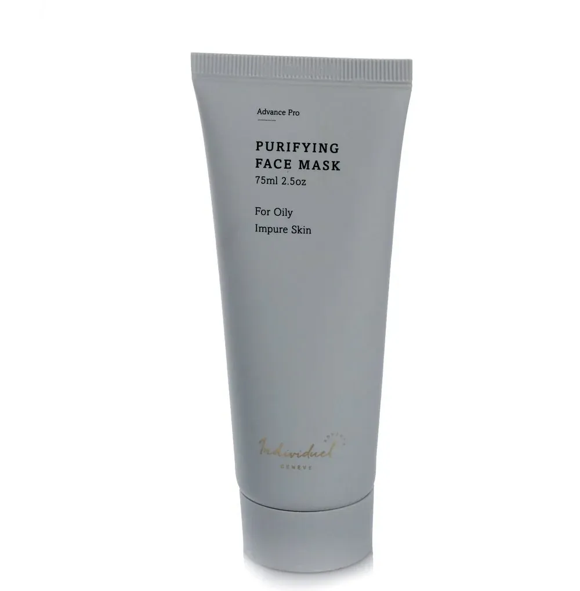

Purifying Mask 75ml · Individuel Genève Advance Pro

Para pieles grasas e impuras. Mascarilla de arcilla purificante diseñada para absorber el exceso de sebo de las pieles grasas o impuras. La textura suave se adhiere bien a la piel y es fácil de aplicar en una capa delgada y uniforme que se seca en minutos. Contiene una gran cantidad de hierbas calmantes mediterráneas (manzanilla, cola de caballo, romero y ortiga) que calman la irritación de la piel durante su aplicación, a la vez que ejercen una actividad antioxidante.
Activos: Hierbas calmantes mediterráneas (Manzanilla, Cola de Caballo, Romero y Ortiga) que calman la piel durante la aplicación a la vez que proporcionan actividad antioxidante.
Producto original · Distribuidor autorizado en México · Personalizado para todo tipo de piel